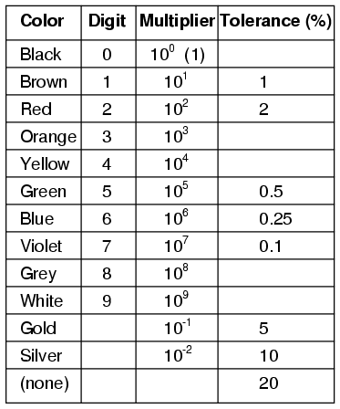
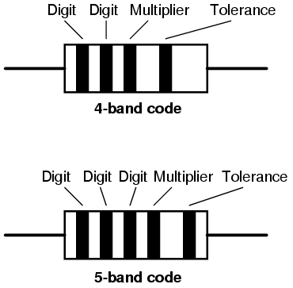
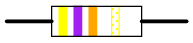
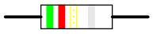
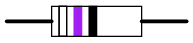
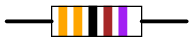
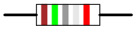
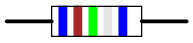

Components and wires are coded with colors to identify their value and function.

The colors brown, red, green, blue, and violet are used as tolerance codes on 5-band resistors only. All 5-band resistors use a colored tolerance band. The blank (20%) "band" is only used with the "4-band" code (3 colored bands + a blank "band").


A resistor colored Yellow-Violet-Orange-Gold would be 47 kΩ with a tolerance of +/- 5%.

A resistor colored Green-Red-Gold-Silver would be 5.2 Ω with a tolerance of +/- 10%.

A resistor colored White-Violet-Black would be 97 Ω with a tolerance of +/- 20%. When you see only three color bands on a resistor, you know that it is actually a 4-band code with a blank (20%) tolerance band.

A resistor colored Orange-Orange-Black-Brown-Violet would be 3.3 kΩ with a tolerance of +/- 0.1%.

A resistor colored Brown-Green-Grey-Silver-Red would be 1.58 Ω with a tolerance of +/- 2%.

A resistor colored Blue-Brown-Green-Silver-Blue would be 6.15 Ω with a tolerance of +/- 0.25%.
Wiring for AC and DC power distribution branch circuits are color coded for identification of individual wires. In some jurisdictions all wire colors are specified in legal documents. In other jurisdictions, only a few conductor colors are so codified. In that case, local custom dictates the “optional” wire colors.
IEC, AC: Most of Europe abides by IEC (International Electrotechnical Commission) wiring color codes for AC branch circuits. These are listed in Table below. The older color codes in the table reflect the previous style which did not account for proper phase rotation. The protective ground wire (listed as green-yellow) is green with yellow stripe.
IEC (most of Europe) AC power circuit wiring color codes.
| Function | label | Color, IEC | Color, old IEC |
|---|---|---|---|
| Protective earth | PE | green-yellow | green-yellow |
| Neutral | N | blue | blue |
| Line, single phase | L | brown | brown or black |
| Line, 3-phase | L1 | brown | brown or black |
| Line, 3-phase | L2 | black | brown or black |
| Line, 3-phase | L3 | grey | brown or black |
UK, AC: The United Kingdom now follows the IEC AC wiring color codes. Table below lists these along with the obsolete domestic color codes. For adding new colored wiring to existing old colored wiring see Cook. [PCk]
UK AC power circuit wiring color codes.
| Function | label | Color, IEC | Old UK color |
|---|---|---|---|
| Protective earth | PE | green-yellow | green-yellow |
| Neutral | N | blue | black |
| Line, single phase | L | brown | red |
| Line, 3-phase | L1 | brown | red |
| Line, 3-phase | L2 | black | yellow |
| Line, 3-phase | L3 | grey | blue |
US, AC:The US National Electrical Code only mandates white (or grey) for the neutral power conductor and bare copper, green, or green with yellow stripe for the protective ground. In principle any other colors except these may be used for the power conductors. The colors adopted as local practice are shown in Table below. Black, red, and blue are used for 208 VAC three-phase; brown, orange and yellow are used for 480 VAC. Conductors larger than #6 AWG are only available in black and are color taped at the ends.
US AC power circuit wiring color codes.
| Function | label | Color, common | Color, alternative |
|---|---|---|---|
| Protective ground | PG | bare, green, or green-yellow | green |
| Neutral | N | white | grey |
| Line, single phase | L | black or red (2nd hot) | |
| Line, 3-phase | L1 | black | brown |
| Line, 3-phase | L2 | red | orange |
| Line, 3-phase | L3 | blue | yellow |
Canada: Canadian wiring is governed by the CEC (Canadian Electric Code). See Table below. The protective ground is green or green with yellow stripe. The neutral is white, the hot (live or active) single phase wires are black , and red in the case of a second active. Three-phase lines are red, black, and blue.
Canada AC power circuit wiring color codes.
| Function | label | Color, common |
|---|---|---|
| Protective ground | PG | green or green-yellow |
| Neutral | N | white |
| Line, single phase | L | black or red (2nd hot) |
| Line, 3-phase | L1 | red |
| Line, 3-phase | L2 | black |
| Line, 3-phase | L3 | blue |
IEC, DC: DC power installations, for example, solar power and computer data centers, use color coding which follows the AC standards. The IEC color standard for DC power cables is listed in Table below, adapted from Table 2, Cook. [PCk]
IEC DC power circuit wiring color codes.
| Function | label | Color |
|---|---|---|
| Protective earth | PE | green-yellow |
| 2-wire unearthed DC Power System | ||
| Positive | L+ | brown |
| Negative | L- | grey |
| 2-wire earthed DC Power System | ||
| Positive (of a negative earthed) circuit | L+ | brown |
| Negative (of a negative earthed) circuit | M | blue |
| Positive (of a positive earthed) circuit | M | blue |
| Negative (of a positive earthed) circuit | L- | grey |
| 3-wire earthed DC Power System | ||
| Positive | L+ | brown |
| Mid-wire | M | blue |
| Negative | L- | grey |
US DC power: The US National Electrical Code (for both AC and DC) mandates that the grounded neutral conductor of a power system be white or grey. The protective ground must be bare, green or green-yellow striped. Hot (active) wires may be any other colors except these. However, common practice (per local electrical inspectors) is for the first hot (live or active) wire to be black and the second hot to be red. The recommendations in Table below are by Wiles. [JWi] He makes no recommendation for ungrounded power system colors. Usage of the ungrounded system is discouraged for safety. However, red (+) and black (-) follows the coloring of the grounded systems in the table.
US recommended DC power circuit wiring color codes.
| Function | label | Color |
|---|---|---|
| Protective ground | PG | bare, green, or green-yellow |
| 2-wire ungrounded DC Power System | ||
| Positive | L+ | no recommendation (red) |
| Negative | L- | no recommendation (black) |
| 2-wire grounded DC Power System | ||
| Positive (of a negative grounded) circuit | L+ | red |
| Negative (of a negative grounded) circuit | N | white |
| Positive (of a positive grounded) circuit | N | white |
| Negative (of a positive grounded) circuit | L- | black |
| 3-wire grounded DC Power System | ||
| Positive | L+ | red |
| Mid-wire (center tap) | N | white |
| Negative | L- | black |
Lessons In Electric Circuits copyright (C) 2000-2023 Tony R. Kuphaldt, under the terms and conditions of the CC BY License.